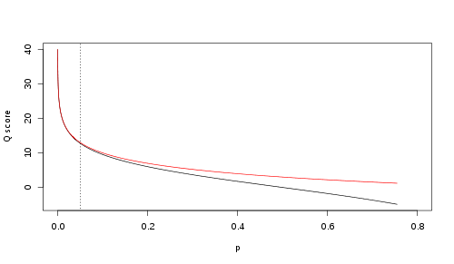

2 File formats usable with OBITools
OBITools manipulate have to manipulate DNA sequence data and taxonomical data. They can use some supplentary metadata describing the experiment and produce some stats about the processed DNA data. All the manipulated data are stored in text files, following standard data format.
2.1 The DNA sequence data
Sequences can be stored following various format. OBITools knows some of them. The central formats for sequence files manipulated by OBITools scripts are the fasta and fastq format. OBITools extends the both these formats by specifying a syntax to include in the definition line data qualifying the sequence. All file formats use the IUPAC code for encoding nucleotides.
Moreover these two formats that can be used as input and output formats, OBITools4 can read the following format :
- EBML flat file format (use by ENA)
- Genbank flat file format
- ecoPCR output files
2.1.1 The IUPAC Code
The International Union of Pure and Applied Chemistry (IUPAC_) defined the standard code for representing protein or DNA sequences.
| Code | Nucleotide |
|---|---|
| A | Adenine |
| C | Cytosine |
| G | Guanine |
| T | Thymine |
| U | Uracil |
| R | Purine (A or G) |
| Y | Pyrimidine (C, T, or U) |
| M | C or A |
| K | T, U, or G |
| W | T, U, or A |
| S | C or G |
| B | C, T, U, or G (not A) |
| D | A, T, U, or G (not C) |
| H | A, T, U, or C (not G) |
| V | A, C, or G (not T, not U) |
| N | Any base (A, C, G, T, or U) |
2.1.2 The fasta sequence format
The fasta format is certainly the most widely used sequence file format. This is certainly due to its great simplicity. It was originally created for the Lipman and Pearson FASTA program. OBITools use in more of the classical fasta format an extended version of this format where structured data are included in the title line.
In fasta format a sequence is represented by a title line beginning with a > character and the sequences by itself following the :doc:iupac code. The sequence is usually split other severals lines of the same length (expect for the last one)
>my_sequence this is my pretty sequence
ACGTTGCAGTACGTTGCAGTACGTTGCAGTACGTTGCAGTACGTTGCAGTACGTTGCAGT
GTGCTGACGTTGCAGTACGTTGCAGTACGTTGCAGTACGTTGCAGTACGTTGCAGTGTTT
AACGACGTTGCAGTACGTTGCAGTThis is no special format for the title line excepting that this line should be unique. Usually the first word following the > character is considered as the sequence identifier. The end of the title line corresponding to a description of the sequence. Several sequences can be concatenated in a same file. The description of the next sequence is just pasted at the end of the record of the previous one
>sequence_A this is my first pretty sequence
ACGTTGCAGTACGTTGCAGTACGTTGCAGTACGTTGCAGTACGTTGCAGTACGTTGCAGT
GTGCTGACGTTGCAGTACGTTGCAGTACGTTGCAGTACGTTGCAGTACGTTGCAGTGTTT
AACGACGTTGCAGTACGTTGCAGT
>sequence_B this is my second pretty sequence
ACGTTGCAGTACGTTGCAGTACGTTGCAGTACGTTGCAGTACGTTGCAGTACGTTGCAGT
GTGCTGACGTTGCAGTACGTTGCAGTACGTTGCAGTACGTTGCAGTACGTTGCAGTGTTT
AACGACGTTGCAGTACGTTGCAGT
>sequence_C this is my third pretty sequence
ACGTTGCAGTACGTTGCAGTACGTTGCAGTACGTTGCAGTACGTTGCAGTACGTTGCAGT
GTGCTGACGTTGCAGTACGTTGCAGTACGTTGCAGTACGTTGCAGTACGTTGCAGTGTTT
AACGACGTTGCAGTACGTTGCAGT2.1.3 The fastq sequence format1
The FASTQ format is a text file format for storing both biological sequences (only nucleic acid sequences) and the associated quality scores. The sequence and score are each encoded by a single ASCII character. This format was originally developed by the Wellcome Trust Sanger Institute to link a FASTA sequence file to the corresponding quality data, but has recently become the de facto standard for storing results from high-throughput sequencers (Cock et al. 2010).
A fastq file normally uses four lines per sequence.
- Line 1 begins with a ‘@’ character and is followed by a sequence identifier and an optional description (like a :ref:
fastatitle line). - Line 2 is the raw sequence letters.
- Line 3 begins with a ‘+’ character and is optionally followed by the same sequence identifier (and any description) again.
- Line 4 encodes the quality values for the sequence in Line 2, and must contain the same number of symbols as letters in the sequence.
A fastq file containing a single sequence might look like this:
@SEQ_ID
GATTTGGGGTTCAAAGCAGTATCGATCAAATAGTAAATCCATTTGTTCAACTCACAGTTT
+
!''*((((***+))%%%++)(%%%%).1***-+*''))**55CCF>>>>>>CCCCCCC65The character ‘!’ represents the lowest quality while ‘~’ is the highest. Here are the quality value characters in left-to-right increasing order of quality (ASCII):
!"#$%&'()*+,-./0123456789:;<=>?@ABCDEFGHIJKLMNOPQRSTUVWXYZ[\]^_`abcdefghijklmnopqrstuvwxyz{|}~The original Sanger FASTQ files also allowed the sequence and quality strings to be wrapped (split over multiple lines), but this is generally discouraged as it can make parsing complicated due to the unfortunate choice of “@” and “+” as markers (these characters can also occur in the quality string).
Sequence quality scores
The Phred quality value Q is an integer mapping of p (i.e., the probability that the corresponding base call is incorrect). Two different equations have been in use. The first is the standard Sanger variant to assess reliability of a base call, otherwise known as Phred quality score:
\[ Q_\text{sanger} = -10 \, \log_{10} p \]
The Solexa pipeline (i.e., the software delivered with the Illumina Genome Analyzer) earlier used a different mapping, encoding the odds \(\mathbf{p}/(1-\mathbf{p})\) instead of the probability \(\mathbf{p}\):
\[ Q_\text{solexa-prior to v.1.3} = -10 \; \log_{10} \frac{p}{1-p} \]
Although both mappings are asymptotically identical at higher quality values, they differ at lower quality levels (i.e., approximately \(\mathbf{p} > 0.05\), or equivalently, \(\mathbf{Q} < 13\)).

Encoding
The fastq format had differente way of encoding the Phred quality score along the time. Here a breif history of these changes is presented.
- Sanger format can encode a Phred quality score from 0 to 93 using ASCII 33 to 126 (although in raw read data the Phred quality score rarely exceeds 60, higher scores are possible in assemblies or read maps).
- Solexa/Illumina 1.0 format can encode a Solexa/Illumina quality score from -5 to 62 using ASCII 59 to 126 (although in raw read data Solexa scores from -5 to 40 only are expected)
- Starting with Illumina 1.3 and before Illumina 1.8, the format encoded a Phred quality score from 0 to 62 using ASCII 64 to 126 (although in raw read data Phred scores from 0 to 40 only are expected).
- Starting in Illumina 1.5 and before Illumina 1.8, the Phred scores 0 to 2 have a slightly different meaning. The values 0 and 1 are no longer used and the value 2, encoded by ASCII 66 “B”.
Sequencing Control Software, Version 2.6, (Catalog # SY-960-2601, Part # 15009921 Rev. A, November 2009, page 30) states the following: If a read ends with a segment of mostly low quality (Q15 or below), then all of the quality values in the segment are replaced with a value of 2 (encoded as the letter B in Illumina’s text-based encoding of quality scores)… This Q2 indicator does not predict a specific error rate, but rather indicates that a specific final portion of the read should not be used in further analyses. Also, the quality score encoded as “B” letter may occur internally within reads at least as late as pipeline version 1.6, as shown in the following example:
@HWI-EAS209_0006_FC706VJ:5:58:5894:21141#ATCACG/1
TTAATTGGTAAATAAATCTCCTAATAGCTTAGATNTTACCTTNNNNNNNNNNTAGTTTCTTGAGATTTGTTGGGGGAGACATTTTTGTGATTGCCTTGAT
+HWI-EAS209_0006_FC706VJ:5:58:5894:21141#ATCACG/1
efcfffffcfeefffcffffffddf`feed]`]_Ba_^__[YBBBBBBBBBBRTT\]][]dddd`ddd^dddadd^BBBBBBBBBBBBBBBBBBBBBBBBAn alternative interpretation of this ASCII encoding has been proposed. Also, in Illumina runs using PhiX controls, the character ‘B’ was observed to represent an “unknown quality score”. The error rate of ‘B’ reads was roughly 3 phred scores lower the mean observed score of a given run.
- Starting in Illumina 1.8, the quality scores have basically returned to the use of the Sanger format (Phred+33).
OBItools support the Sanger format. It is nevertheless to read files encoded following the Solexa/Illumina format, that are still possible to find in old files, by applying a shift of 62.
2.1.4 File extension
There is no standard file extension for a FASTQ file, but .fq and .fastq, are commonly used.
This article uses material from the Wikipedia article
FASTQ formatwhich is released under theCreative Commons Attribution-Share-Alike License 3.0↩︎